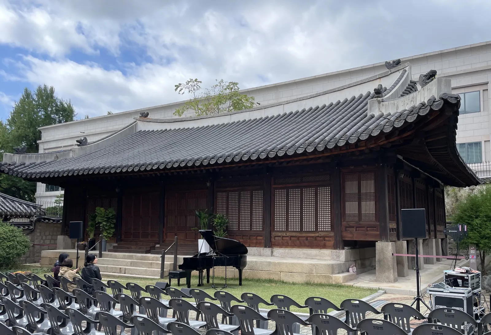
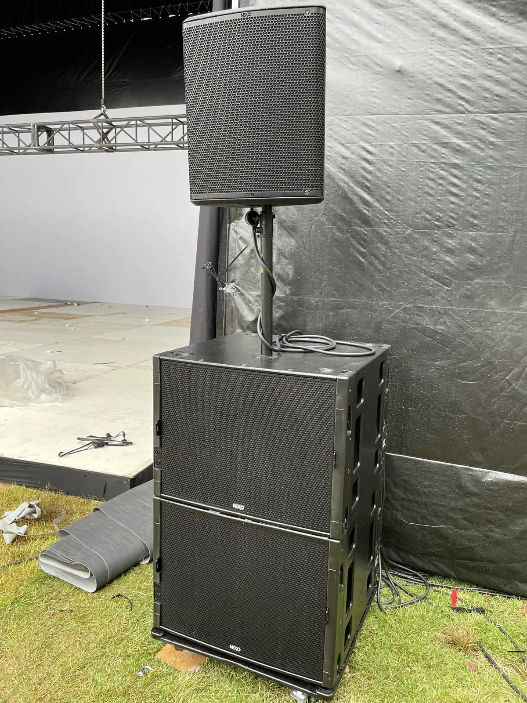

고양 야외 공연 음향은 실내보다 변수가 많습니다. 소리는 흩어지고, 바람과 비는 예보를 봐야 하고, 전기는 끌어와야 합니다. 그래서 체크리스트로 하나씩 지워 나가는 것이 가장 안전합니다. 제이식스미디어가 2022 고양호수예술축제 숲속 공연 음향을 맡았던 현장을 바탕으로, 야외 공연 담당자가 행사 전에 확인할 것을 정리했습니다.
- 야외는 벽이 없어 소리가 흩어지니, 객석 끝 자리에서 들리는지를 기준으로 스피커를 세웁니다.
- 가로수 길 · 계단 · 숲속처럼 무대가 정형이 아닌 자리는 관객이 앉고 서는 위치부터 정하고 스피커를 맞춥니다.
- 기상청 강풍주의보 기준(육상 풍속 14m/s 이상 등)과 비 예보를 보고, 장비를 덮거나 철수할 기준을 미리 정합니다.
- 공연장이 아닌 곳에서 1천명 이상 관람이 예상되는 공연은 공연 개시 14일 전까지 재해대처계획을 신고해야 합니다.
1. 고양 야외 공연 음향, 객석 끝이 기준입니다
실내에서는 벽과 천장이 소리를 붙잡아 주지만, 야외에서는 소리가 사방으로 퍼져 나가며 약해집니다. 무대 앞은 충분히 큰데 객석 뒤쪽이나 옆쪽은 잘 안 들리는 일이 생기기 쉽습니다. 그래서 야외 공연은 「객석 끝에서 들리는가」를 기준으로 스피커 크기와 위치를 정합니다. 넓은 곳에서 소리를 멀리, 고르게 보내야 할 때는 NEXO 라인어레이 같은 대형 구성을 씁니다.
| 체크 | 확인할 것 | 확인 |
|---|---|---|
| 객석 | 관객이 앉고 서는 범위, 가장 먼 자리 | □ |
| 스피커 | 객석 끝까지 닿는 크기 · 높이 · 방향 | □ |
| 주변 | 가까운 주거지 · 다른 행사와 소리 방향 | □ |
| 바람 | 기상청 예보 · 강풍주의보 여부 | □ |
| 비 | 장비 덮개 · 보관 자리 · 철수 기준 | □ |
| 전기 | 끌어올 위치 · 거리 · 선 지나갈 길 | □ |
| 신고 | 관람 예상 인원이 1천명 이상인지 | □ |
2. 숲속 · 계단 무대는 관객 자리부터 정합니다
고양호수예술축제 공연은 가로수 · 계단 같은 야외 자리에서 열렸습니다. 이런 곳은 객석이 의자로 줄 맞춰 있지 않아 관객이 어디에 모일지가 공연마다 다릅니다. 스피커를 먼저 세우기보다, 관객이 앉고 설 범위를 먼저 정하고 그 범위를 덮도록 스피커를 맞추는 순서가 좋습니다.
- 관객 범위를 바닥 표시나 안내로 미리 정해 둡니다.
- 스피커는 관객 머리 위로 소리가 지나가도록 사람 키보다 높게 세웁니다.
- 나무나 계단 난간이 스피커 앞을 가리지 않는지 봅니다.
- 관객이 오가는 길에 스피커 스탠드와 선이 걸리지 않게 둡니다.

3. 바람과 비, 기준을 미리 정합니다
야외 공연에서 가장 곤란한 것은 날씨 판단을 당일 현장에서 처음 하는 경우입니다. 기상청 기상특보 발표기준을 보면 강풍주의보는 육상에서 풍속 14m/s 이상 또는 순간풍속 20m/s 이상이 예상될 때 내려집니다(산지는 17m/s · 25m/s). 호우주의보는 3시간 누적강우량 60mm 이상 또는 12시간 누적강우량 110mm 이상이 예상될 때입니다. 이런 특보가 예보되면 스탠드에 세운 스피커와 매단 장비는 위험해질 수 있으니, 주최 측과 행사 전에 「어떤 예보면 어떻게 한다」는 기준을 정해 두세요.
| 상황 | 미리 정할 것 |
|---|---|
| 약한 비 | 믹서 · 장비 덮개, 선 연결부 방수, 객석 안내 |
| 강한 비 예보 | 장비를 옮길 지붕 있는 자리, 공연 순서 줄이기 |
| 바람이 셈 | 스피커 높이 낮추기 · 받침 고정, 매다는 장비 줄이기 |
| 강풍 · 호우 특보 | 공연 연기 · 실내 전환 여부를 누가 언제 결정할지 |
4. 전기와 장비 반입 길을 확인합니다
야외 무대는 음향 · 조명에 쓸 전기를 어디서 끌어올지가 큰 문제입니다. 공원이나 광장 관리 쪽에 쓸 수 있는 전원 위치와 거리, 선이 지나갈 길을 미리 물어 두세요. 관객이 다니는 길을 가로지르는 선은 덮개를 씌우고 표시합니다. 장비 차가 무대 가까이 들어올 수 있는지, 들어올 수 있는 시간이 정해져 있는지도 함께 확인합니다.

5. 사람이 많이 모이면 신고 기준을 확인합니다
찾기쉬운 생활법령정보에 따르면, 공연장 외의 장소에서 1천명 이상의 관람이 예상되는 공연을 하려는 자는 해당 시설이나 장소 운영자와 공동으로 공연 개시 14일 전까지 재해대처계획을 관할 시장 · 군수 · 구청장 등에게 신고해야 합니다. 신고한 내용을 바꾸려면 공연 7일 전까지 변경신고를 합니다(근거: 「공연법 시행령」 제9조).
신고는 공연을 여는 주최 측의 일입니다. 예상 관람 인원이 크다면 관할 구청 담당 부서에 행사 개요를 들고 일찍 문의하세요. 음향 배치도와 장비 목록이 필요하면 음향 팀에 미리 요청해 두면 됩니다.
6. 고양 야외 공연 음향 견적 문의 전에 정리할 것
남양주 별내 사무실에서 고양시청까지 차로 약 30분 · 35.6km(막히지 않을 때 기준)입니다. 자동 견적서에서 항목을 골라 보내 주시면 확인 후 안내합니다. 견적서에는 단가가 「협의」로 나오고, 담당자가 현장 여건을 확인한 뒤 확정 견적을 보냅니다.
| 자동 견적서 항목 | 언제 고르나 |
|---|---|
| 전시 · 공연 입체음향 | 콘서트 · 공연 음향을 통째로 맡길 때 |
| 음향 (대형) | NEXO 라인어레이 · 야외 공연 · 축제 규모일 때 |
| 모니터 스피커 | 연주자가 무대에서 자기 소리를 들어야 할 때 |
| 음향 엔지니어 | 현장 믹싱과 운영을 맡길 때 |
| 설치 · 철수 스탭 | 장비 반입 · 철수 인력이 필요할 때 |
지역 안내는 고양 음향 · 설치 안내, 연말 공연 준비는 가평 송년 콘서트 음향 글에 따로 정리했습니다.
자주 묻는 질문
비가 오면 공연을 할 수 있나요?
약한 비는 장비를 덮고 진행하기도 하지만, 강한 비나 바람이 예보되면 위험할 수 있습니다. 어떤 예보면 연기하거나 줄일지 주최 측과 행사 전에 기준을 정해 두세요.
재해대처계획 신고는 누가 하나요?
공연을 하려는 자(주최 측)가 장소 운영자와 공동으로 신고합니다. 공연장 외의 장소에서 1천명 이상 관람이 예상될 때 공연 개시 14일 전까지입니다.
전기는 어떻게 준비하나요?
공원 · 광장 관리 쪽에 쓸 수 있는 전원 위치와 거리를 먼저 확인해 알려 주세요. 그 내용을 보고 장비 배치와 선 지나갈 길을 맞춥니다.